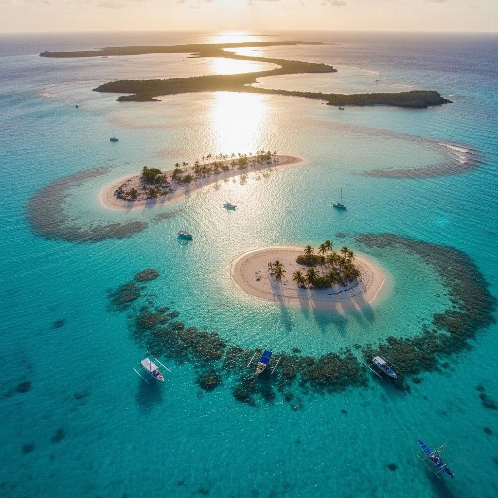
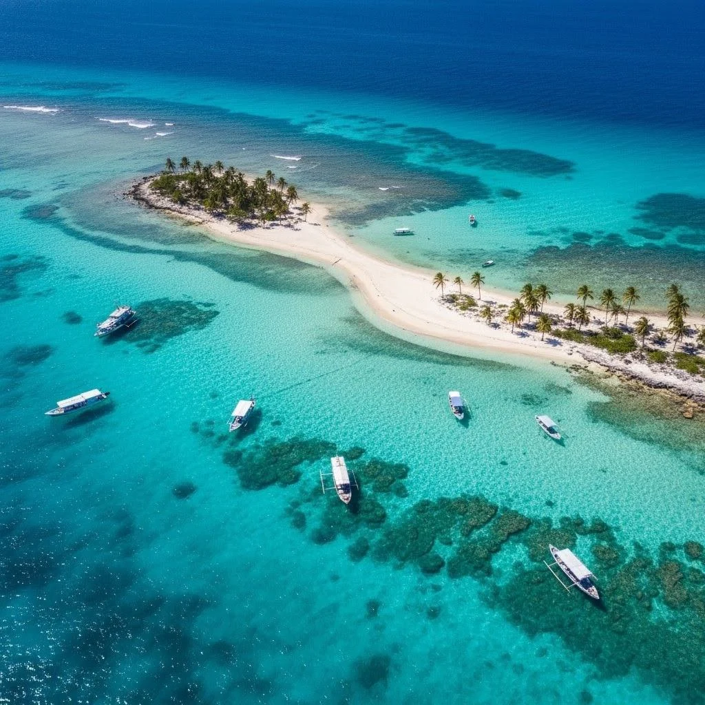
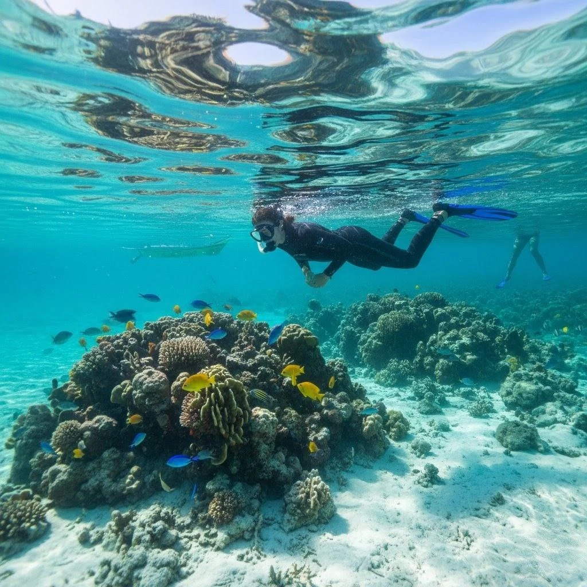
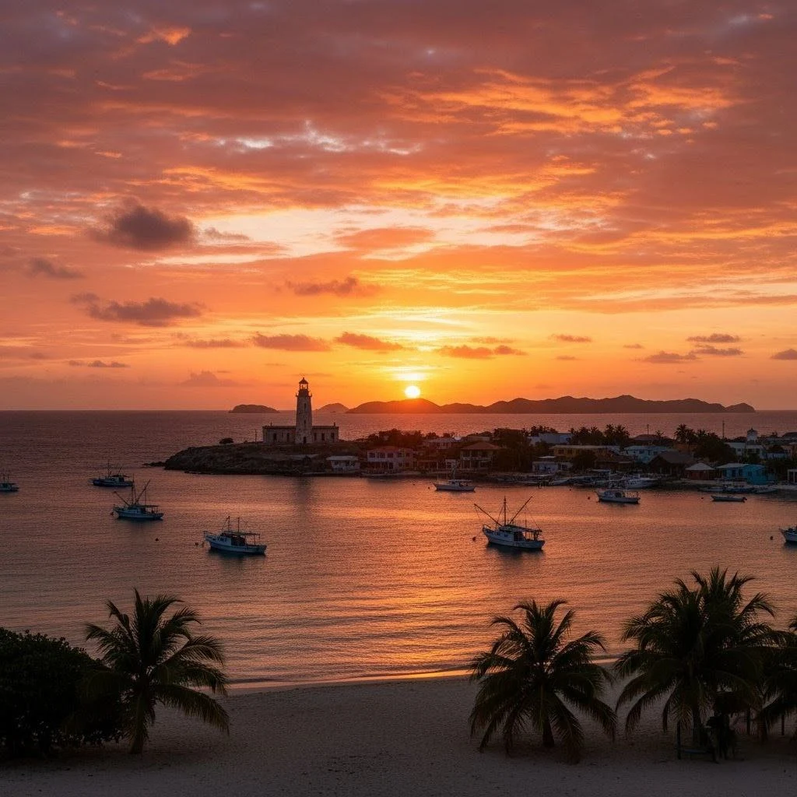

Los Roques — 4 días
Un paraíso caribeño: playas blancas, atolones paradisíacos y snorkel entre corales. Ideal como complemento a un viaje por Europa o como escapada desde Venezuela.

Resumen del viaje
Traslado en avión o ferry (según temporada) al archipiélago, hospedaje en posada con encanto, excursiones a cayos y actividades de snorkel con equipos incluidos en paquetes seleccionados.
Itinerario día a día
- Día 1: Salida desde Caracas/Cumana, llegada a Gran Roque, check-in y atardecer en la playa.
- Día 2: Excursión a Cayo de Agua y Francisquí — día de playas y snorkel.
- Día 3: Paseo en lancha a Noronquí y Madrisquí; tiempo libre para kayak o pesca deportiva (opcional).
- Día 4: Mañana libre en Gran Roque y regreso a la ciudad de origen.
Incluye
- Traslados locales (según paquete)
- Alojamiento en posada o cabaña
- Excursiones a cayos, guía local y equipo básico de snorkel (si aplica)
No incluye
- Vuelos nacionales o desde Venezuela (pueden gestionarse por separado)
- Actividades opcionales con costo extra (pesca deportiva, hospedaje superior)
Precio referencial: desde USD 420 (sujeto a temporada y disponibilidad)
Solicitar cotizaciónGalería


